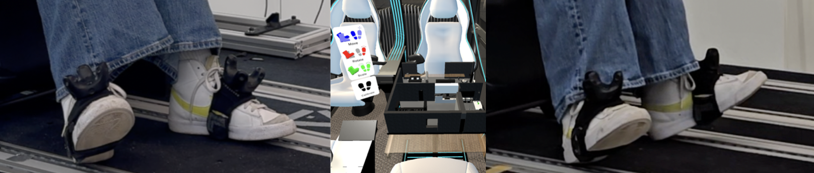
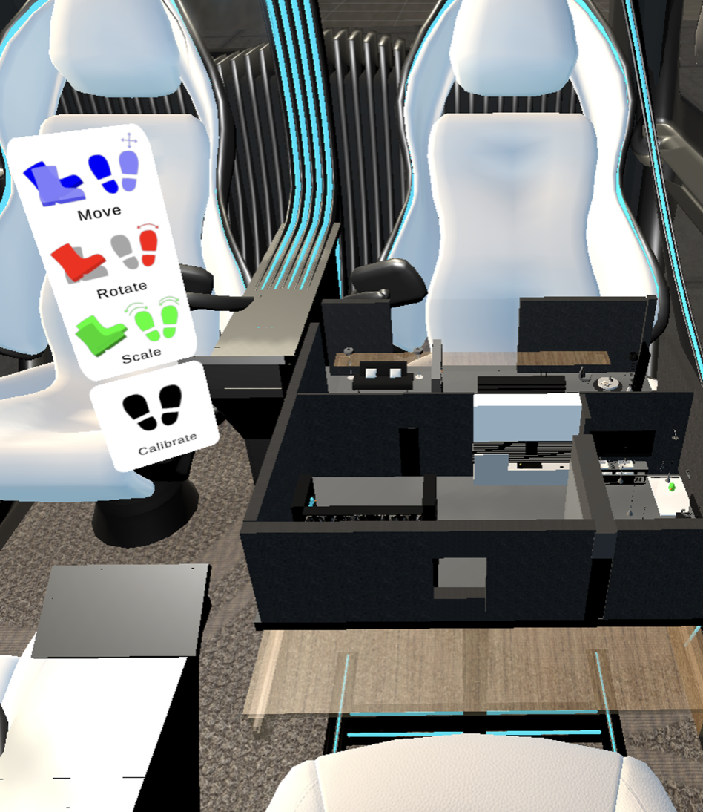

Role: SOTA analysis, gesture concept, user study concept, user tests
Tools: Unity, Varjo XR3, Miro
Team: Group Project
This project explores how hand and foot gestures can be combined to interact with 3D models in a virtual autonomous car environment. It investigates the usability of newly designed foot-based interactions and compares them to established hand gestures through a structured user study. The results show that foot gestures work well for larger, more dynamic actions, while hand gestures remain preferred for precise control. Overall, the project demonstrates the potential of multimodal VR interaction and highlights areas for further improvement in gesture design.

Hand gestures are well-established in VR, but they can be limiting in terms of comfort and accessibility. The project explored whether foot gestures could serve as an additional interaction method for controlling a 3D model. The challenge was to determine whether foot gestures could support actions like rotating, zooming, and moving a 3D model inside a virtual autonomous car environment, and how their usability compares to established hand-based controls. The project aimed to design an intuitive set of foot gestures, integrate them into a VR prototype, and compare their usability to hand gestures using quantitative and qualitative feedback collected in user tests.
A state-of-the-art analysis highlighted key principles for designing foot gestures: larger movements are more reliably detected, gestures inspired by hand interactions feel intuitive, and subtle motions—such as foot shaking—are not practical. Personas and user stories guided the interaction context and accessibility needs. Several gesture concepts were explored and refined through internal testing, leading to a selected set of gestures for zooming, rotation, and movement. An activation mechanism (lifting toes) and color-coded foot feedback were introduced to improve clarity and prevent accidental activation.
The foot gestures were integrated into a VR prototype built on an existing hand-gesture system. A technical challenge arose from reflective surfaces interfering with the foot sensors, causing inaccurate tracking; the environment was adjusted to reduce reflections, partially improving responsiveness. A pre-test revealed the need for gesture adjustments, a legend, a calibrate button, and additional qualitative questions. The main study involved 12 participants who tested three modes, hand, foot, and combined gestures and completed SUS questionnaires after each gesture set. Observations showed that users preferred foot rotation, hand-based zooming, and a mixed-gesture workflow. Additional feedback was collected from 19 Media Night visitors, many of whom affirmed interest in foot-gesture interaction but noted a learning curve.

→ Promising innovation, by diversifying interaction modalities. Beneficial for certain tasks, but less effective for others.
→ Combining hand and foot gestures is preferred, hands used for actions that require precision, foot gestures for actions that benefit from larger movements
→ Issues such as gesture discomfort, occasional misrecognition, and the learning curve associated with foot gestures suggest that improvements are necessary for broader adoption.
→ Future research should focus on optimizing gesture recognition algorithms, enhancing the responsiveness of foot-based controls, and incorporating more intuitive and distinct gesture mappings.